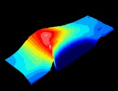
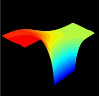

{kind=link}
Archimedes

|  | Archimedes |
 |
Table of Contents |
Direct Contact to the AuthorIf you want to contact Jean Michel Sellier, the author of the GNU packages Archimedes, Aeneas and Dionysus, you can now directly ask questions to him by clicking on his 8-bit profile on you8bit.com. His 8-bit profile can be found at the following link: http://www.you8bit.com/profile.php?user=de2f6612c6c94d3ab5eb7e5871ce069f Every question and comment is VERY welcome! |
Archimedes is the GNU package for the design and simulation of submicron semiconductor devices. It is a 2D Fast Monte Carlo simulator which can take into account all the relevant quantum effects, thank to the implementation of the Bohm effective potential method.
The physics and geometry of a general device is introduced by typing a simple script, which makes, in this sense, Archimedes a powerful tool for the simulation of quite general semiconductor devices.
In the present release (0.9.1), Archimedes is able to simulate electrons and heavy holes in Silicon, Germanium, GaAs, InSb, AlSb, AlAs , AlxInxSb, AlxIn(1-x)Sb, AlP, AlSb, GaP, GaSb, InP and their compounds (i.e. all the range of known III-V semiconductor materials), the presence of Silicon Oxide, and the applied and/or self-consistent magnetic fields by means of Faraday's equation. It is, also, able to deal with heterostructures. In the next release, which is in preparation, it will be able to take into account the Impact Ionisation phenomenon (this release will be delivered as soon as possible).
In today semiconductor technology, the miniaturization of devices is more and more progressing. In this context, it is easy to see that numerical simulations play an important role at every level of device manufacture. In fact, the cost of designing and physically constructing prototypes for VLSI semiconductor devices is very high and without the availability of advanced simulators the efforts for devices miniaturization would, likely, be brought to a halt. From assessing the performance of individual transistors, to circuits and systems, and, consequently, with the promise of improved device performance, industries are encouraged to keep on miniaturizing with lower manufacture costs.
But, unfortunately, such simulations are not whithout their challenges... A first consequence of device miniaturization is that simulations of submicron semicondutor devices requires advanced transport models. Because of the presence of very high and rapidly varying electric field, phenomena occur which cannot be described by means of the well-known drift-diffusion models, which do not incorporate energy as a dynamical variable. That is why some generalization has been sought in order to obtain more physically accurate models, like energy-transport and hydrodynamical models. The energy-transport models which are implemented in commercial simulators are based on phenomenological constitutive equations for the particle flux and energy flux depending on a set of parameters which are fitted to homogeneous bulk material Monte Carlo simulations. So, this is not, certainly, a satisfactory physical description of the internal electronic dynamics in a semiconductor device.
As current device technologies quickly approach the scales whereby quantum effects due to strong confinement of carriers and direct source-drain tunneling will begin to dominate, new simulation techniques are required in order to fully understand and acurately simulate the physics behind the technology operation.
Of all the simulation methods currently employed, ensemble Monte Carlo has always been, both in the accademic and industrial community, the most vigorous and trusted method for device simulation, as it is proven to be reliable and predictive, as one can easily see from the vast bibliography on this subject. However, as Monte Carlo relies on the particle nature of the electron (in fact we consider an electron like a 'biliard ball'), quantum effects associated with the wave-like nature of electrons cannot fully incorporated into the actual simulators, i.e. the ensemble Monte Carlo have to be lightly (or strongly, it depends on the point of view and on the methods implemented...) modified to take into account the quantum effects, at least at a first order of approximation, which is certainly enough to take into account correctly all the relevant quantum effects present in the present-day semiconductor devices (till 2015 probably...). In order to take into account the wave-like nature of electrons we use a recently introduced quantum theory, the so-called Bohm effective potential theory.
So it is challenging and very interesting to develop such a code for 2D quantum submicron semiconductor devices. This is why I have decided to implement this code, but these are not the only motivations...
The very sad situation you quickly observe working in a semiconductor industry, but also in all places in which researches about semiconductor devices are made, the only codes for simulation you can find are not free and are proprietary codes. That is a very bad situation because, at the present time, if you need to develop your own code for the purpose of simulating a device it is IMPOSSIBLE to obtain an advanced one in a short time, and, trust me, this is EXTREMELY BAD for scientific research... (Immagine if you had to re-discover the Newtonian laws every time you need them...) So, you can find a huge amount of papers describing a lot of numerical methods for simulating, in a very advanced way, semiconductor devices (even in the quantum case), but nobody will give you a code on which you can construct your own method (with the unlikely exception that at least one of the programmers is a friend of yours :) ).
Even worst, if you are a semiconductor device designer and you want to simulate "realistically" a new device, you have to pay (trust me, at very high costs!) a BINARY (just a binary and not the code!) from some well-known software industry. This binary will certainly have some bugs (because it is coded by humans which are not perfect...) and you will never have the possibility of fix them on your own. Of course, you can write to the software house and tell them that there is a bug, but, how many time do you will wait for a new release without those bugs? I don't think it will be a short time...
My impression is that, after a long research on the Web for a Free Software dealing with advanced 2D semiconductor device simulation, there was not a free code for the purpose of semiconductor devices simulation (i mean under GPL license). To be sure about it, I asked to the great Richard Stallman (by mail) if it will be worth to do a code like this and he encouraged me to code it, because there wasn't a code like this as free. So I decided to write this code..
GNU/Archimedes has been developed in my free time and it took a huge amount of time for the development of a trustable and predictive code, a code which can certainly be an alternative to the proprietary simulation programs used in industry and/or research (certainly a better alternative if you to use a code on which construct your own code/method). So if you use it and you like it and you are an industry researcher, a university researcher, or a researcher in an other organisation, (or if you just want to encourage my effort in doing something important for the scientifical/industrial community) please think about the possibility of buying my DISTRIBUTION, in order to support and encourage my effort of making new versions of GNU/Archimedes. It is very important for the community and for the future of the technology and science to support Free Software, so, in the case you want the distribution or you just want to make a donation write to me at my email address.
You will receive the distribution which means that you will receive the last version of the printed manual along with the last version of GNU/Archimedes code (SOURCES and binaries). Furthermore, if you give your email address, you will be informed by the author (me) in case of new downloadable releases :)
Archimedes can be found on http://ftp.gnu.org/gnu/archimedes/ [via http] and ftp://ftp.gnu.org/gnu/archimedes/ [via FTP]. It can also be found on one of our FTP mirrors.
The last and complete Archimedes documentation in HTML, in PDF and a tarball containing the source files in latex.
Some examples of simulations:
Announcements about Archimedes and most other GNU Software are made on <info-gnu@gnu.org>.
There is also a special list used for reporting bugs, <bug-archimedes@gnu.org>. For details on submitting a bug report, please see the section Report a Bug below.
To subscribe to any Archimedes mailing list, please send an empty mail with a Subject: header line of just "subscribe" to the relevant -request list. For example, to subscribe yourself to the main list, you would send mail to <bug-archimedes-request@gnu.org> with no body and a Subject: header line of just "subscribe".
Please remember that development of Archimedes is a volunteer effort, and you can also contribute to its development. For information about contributing to the GNU Project, please read How to help GNU.
If you think you have found a bug in Archimedes, then you should send as complete a report as possible to <bug-archimedes@gnu.org>.
Archimedes is currently being maintained by <jeanmichel.sellier@gmail.com>.
Related projects :
{kind=link}